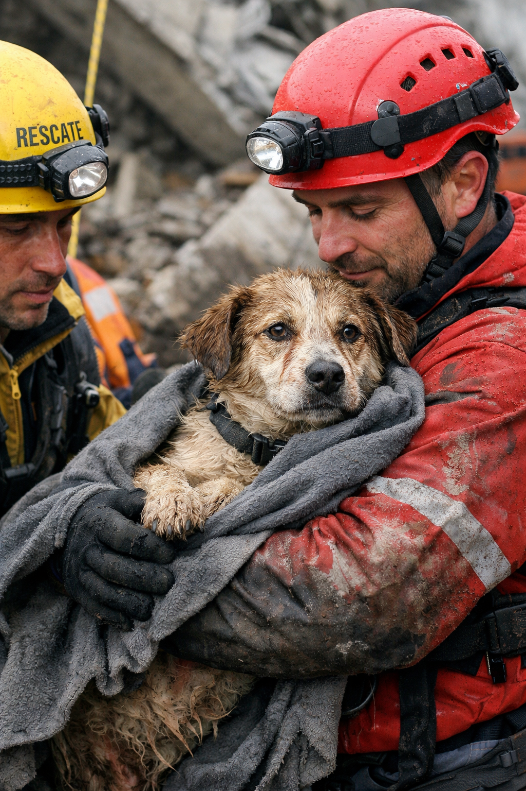
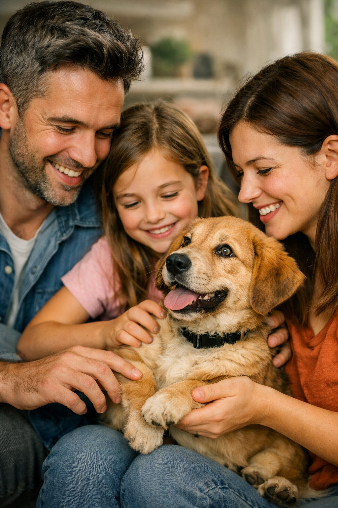
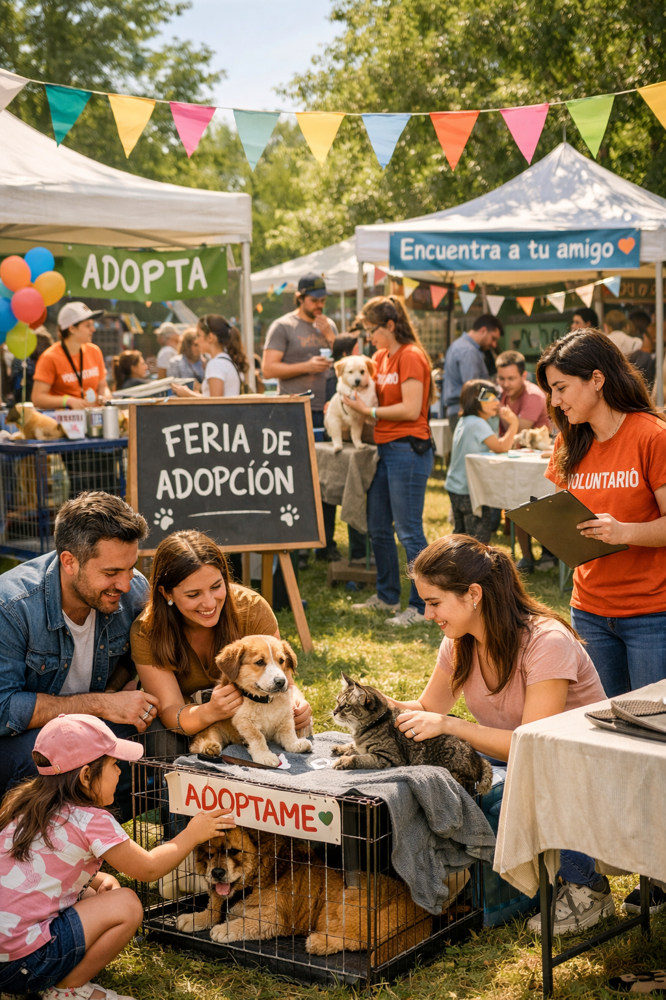
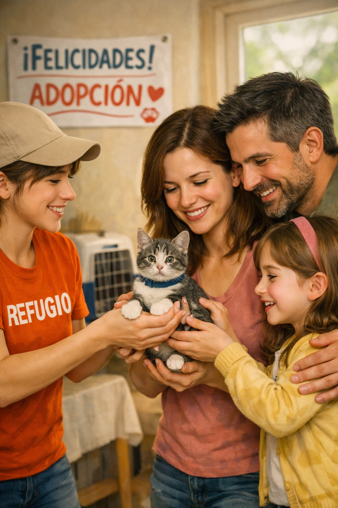
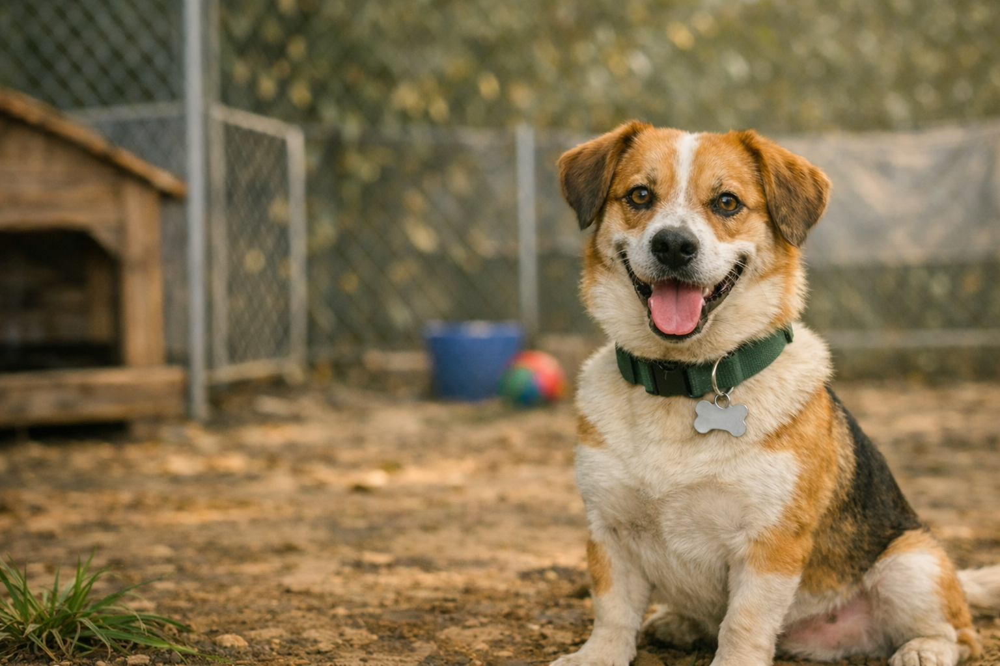
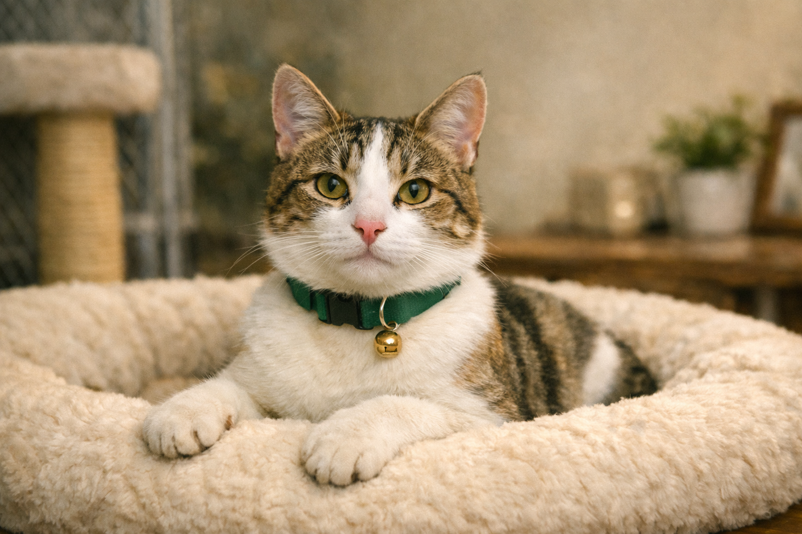
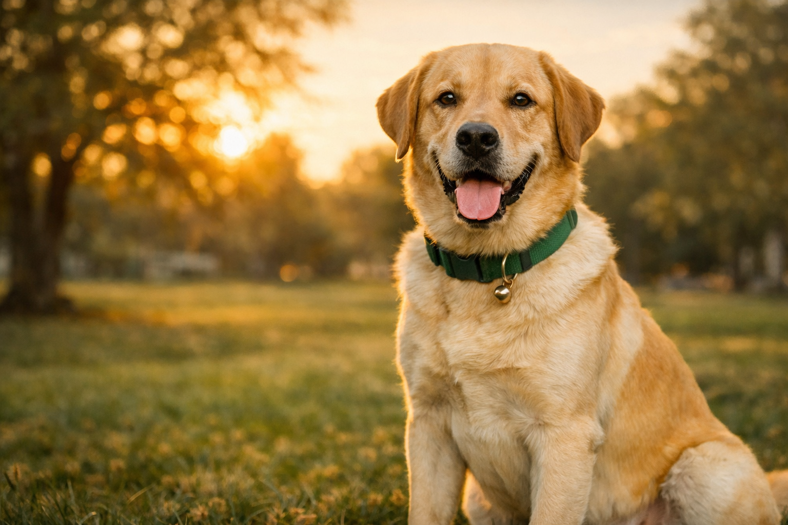
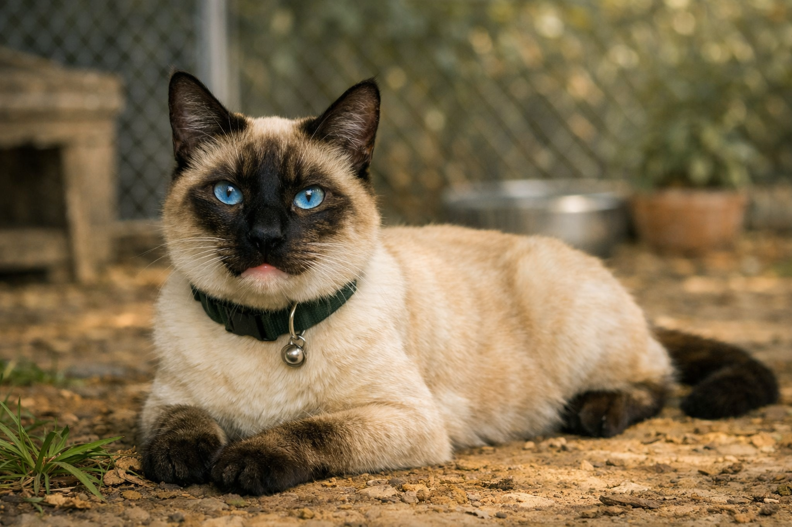
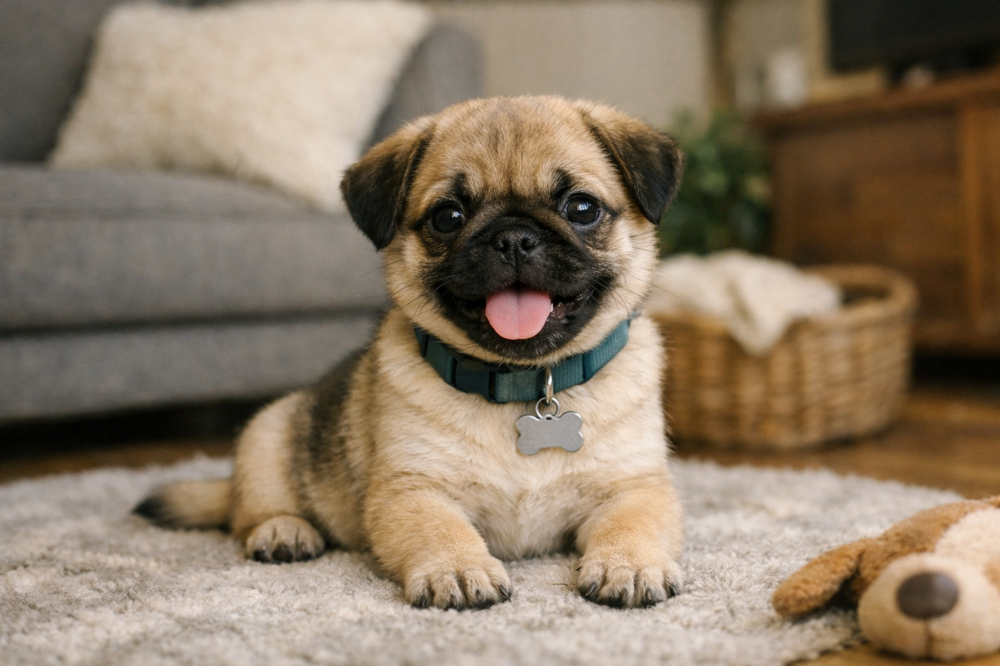
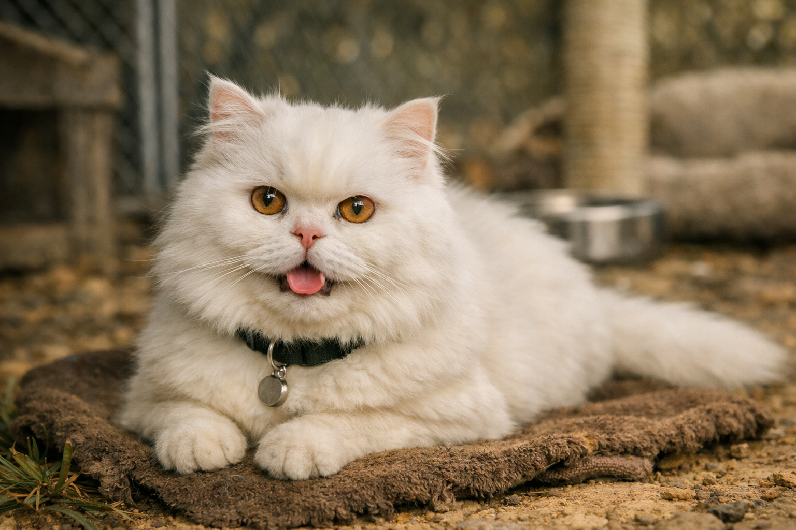
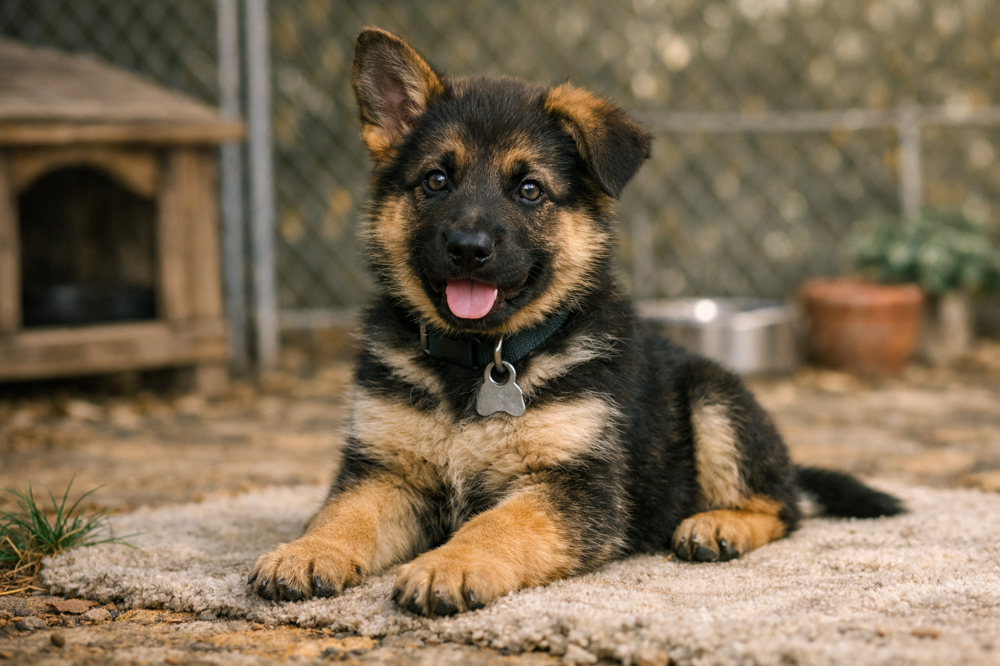
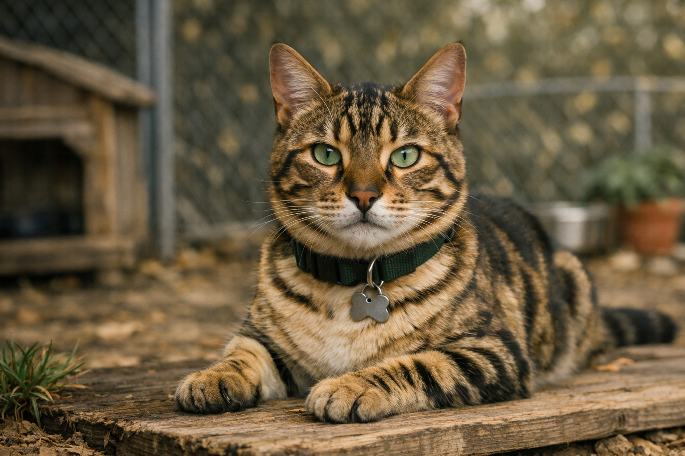
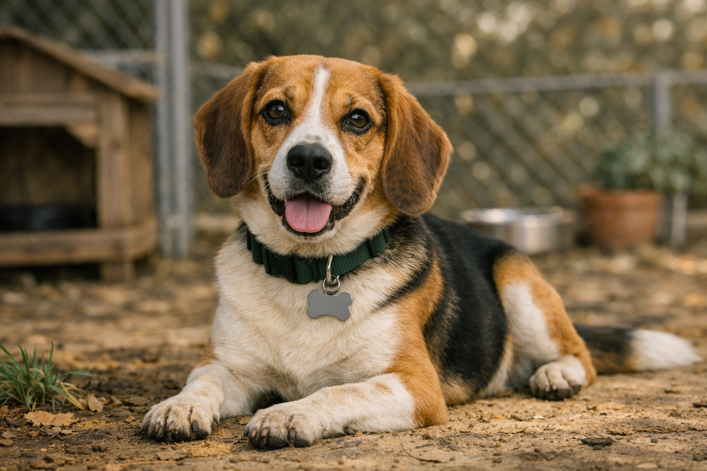
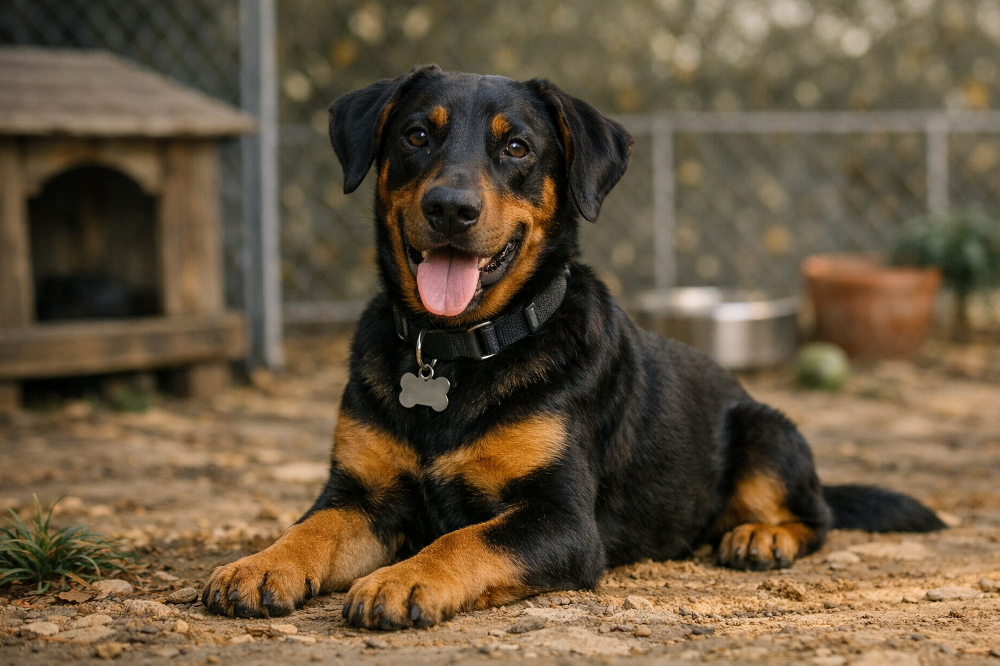
Edad: 2 años
Sexo: Macho
Tamaño/Raza: Mediano - Mestizo
Choco fue rescatado de la calle en condiciones difíciles, pero rápidamente mostró su espíritu alegre. Actualmente está vacunado, desparasitado y en buen estado físico. Es juguetón, cariñoso y disfruta de paseos largos, se lleva bien con otros perros y niños.
Edad: 1 año
Sexo: Hembra
Tamaño/Raza: Pequeño - Gato criollo
Misu fue encontrada en una casa abandonada y rescatada por voluntarios. Está esterilizada, vacunada y no presenta problemas médicos. Es tranquila y muy sociable, le encanta dormir en lugares cálidos y jugar con pelotas, se adapta fácilmente a ambientes familiares.
Edad: 4 años
Sexo: Macho
Tamaño/Raza: Grande - Labrador
Rocky fue entregado por una familia que no podía cuidarlo. Está en excelente estado, con revisiones veterinarias al día. Noble y protector, ideal para familias con niños, disfruta de juegos al aire libre y es obediente.
Edad: 3 años
Sexo: Hembra
Tamaño/Raza: Mediano - Siamés
Luna fue rescatada de un vecindario donde vivía sola. Esterilizada, vacunada y con buena condición física. Curiosa y activa, le gusta explorar y trepar, se adapta fácilmente a nuevos ambientes y es cariñosa con sus cuidadores.
Edad: 3 meses
Sexo: Macho
Tamaño/Raza: Pequeño - Pug
Toby fue encontrado junto a su camada en un refugio improvisado. Alegre y juguetón, necesita un hogar con paciencia y cariño, aprende rápido y busca compañía constante.
Edad: 2 años
Sexo: Hembra
Tamaño/Raza: Mediano - Persa
Nina fue rescatada de un criadero donde no recibía cuidados adecuados. Esterilizada, vacunada y con pelaje bien cuidado. Elegante y tranquila, perfecta para un hogar calmado.
Edad: 6 meses
Sexo: Macho
Tamaño/Raza: Mediano - Pastor Alemán
Max fue entregado por una familia que no podía atender sus necesidades de ejercicio. Enérgico y necesita espacio para correr, excelente compañero de juegos y muy inteligente para el entrenamiento.
Edad: 1 año
Sexo: Macho
Tamaño/Raza: Mediano - Bengalí
Simba fue rescatado de un mercado donde vivía en condiciones precarias. Curioso y muy activo, le encanta explorar y trepar, requiere un hogar que le brinde estímulos y juegos.
Edad: 3 años
Sexo: Macho
Tamaño/Raza: Mediano - Beagle
Coco fue encontrado perdido en un parque y llevado al refugio. Alegre y cariñoso, ideal para familias que disfruten de actividades al aire libre, muy sociable con personas y otros animales.
Edad: 4 años
Sexo: Hembra
Tamaño/Raza: Grande - Doberman
Kira fue rescatada de una familia que no podía brindarle el espacio y la atención que necesitaba. Protectora, inteligente y muy leal, ideal para un hogar activo que valore su carácter vigilante y cariñoso.